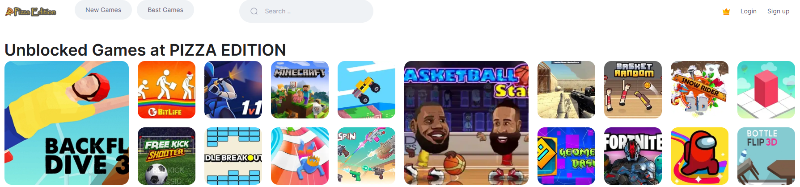
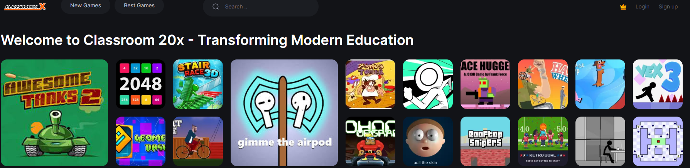

Classroom Games Exposed: The Secret Tactics Teachers Use to Make Learning Addictive
Regularly updated top classroom games platforms list:
- ez classwork
- classroom unblocked games
- classroom 20x
- pizza edition
- ubg98
- classroom 15x
- pizza edition games
- classroom 10x
- ubg games
- classroom 30x
- ubg365
- the pizza edition
- tiny fishing unblocked
- moto x3m unblocked
- unblocked games 66
- pizza edition github
- 32 wordle
- space type
- classroom 70x
- 3kho
- ubg100
- classroom 60x
- ubg44
- classroom x6
- ubg911
- ubg67
- ubg76
- classroom 6x
- unblocked games 76
- 66 ez
- tbg95
- unblocked games g
- classroom games
The best games you can find in the sites above! Hint: Click on a game name to see some CLASSROOM GAMES MAGIC!
The modern classroom has become a battleground for attention, where teachers wield games as both shield and sword against the relentless distractions of smartphones and social media. What began as simple icebreakers like Simon Says or Pictionary has evolved into a sophisticated pedagogical arsenal, blending neuroscience with nostalgia. Educators are increasingly borrowing strategies from game designers—think of Jane McGonigal’s SuperBetter or the dopamine-driven mechanics of Candy Crush—to transform rote learning into riveting experiences. A 2023 Stanford study revealed that classrooms using structured games saw a 40% increase in content retention compared to lecture-based instruction, proving that play isn’t just for recess anymore.
This shift mirrors broader cultural trends. Celebrities like Will Smith have openly praised gamified learning apps for their kids, while tech moguls Elon Musk and Jeff Bezos fund startups merging AI with educational gameplay. Even the U.S. Department of Education now allocates grants for “play-based pedagogy,” a nod to the growing body of research showing that games activate the brain’s hippocampus and prefrontal cortex—key regions for memory and decision-making. Yet, the most compelling evidence comes from students themselves: a tenth grader in Chicago recently tweeted, “I aced my chemistry final because of Jeopardy! review games—no cap.”
The renaissance of classroom games isn’t accidental—it’s a response to Generation Alpha’s digitally rewired brains. Children raised on YouTube and Roblox arrive at school with heightened expectations for interactivity. Traditional lectures, once the gold standard, now compete with TikTok’s 15-second dopamine hits. Teachers like Maria Gonzalez, a 2023 Texas Teacher of the Year finalist, have adapted by gamifying entire curricula. “My students don’t just learn fractions; they raid Fraction Dungeon, battling monsters by solving problems,” she explains. This approach mirrors Fortnite’s tiered rewards system, where incremental achievements keep players hooked.
Critics argue that gamification cheapens education, reducing complex subjects to point systems. But proponents counter that games like Jeopardy! or Quizlet Live merely repackage the Socratic method for the digital age. Historical precedents abound: Socrates used dialogue as a “game” to tease out truths, while medieval scholars turned theological debates into competitive disputations. The difference now is scale. Platforms like Blooket and Gimkit allow teachers to create custom games in minutes, with real-time analytics tracking individual progress. These tools have become the Swiss Army knives of overwhelmed educators, particularly in underfunded schools where tech resources are scarce.
Social dynamics also play a role. Games like Four Corners or Hot Seat force students to read peers’ nonverbal cues—a skill atrophied by pandemic-era Zoom schooling. Dr. Emily Rivera, a child psychologist at UCLA, notes, “Cooperative games rebuild the empathy muscles. When kids collaborate to win a scavenger hunt, they’re practicing emotional intelligence as much as academic content.” This aligns with Google’s Project Aristotle findings that psychological safety—often built through play—is the key to effective teams, a lesson Silicon Valley now exports to schools.
The cultural footprint of classroom games extends beyond academia. Hollywood has taken notice: the 2023 film Edutainment fictionalizes a teacher using zombie-themed math games to save a failing school, starring Zendaya as the protagonist. Meanwhile, musicians like Taylor Swift and Bad Bunny reference schoolyard games in lyrics, romanticizing them as symbols of simpler times. Even fast-food chains have co-opted the trend—McDonald’s 2024 “Happy Meal Math” campaign offers game cards with algebra puzzles, a stark contrast to the toys of the past.
Yet challenges persist. Equity gaps emerge when affluent schools access VR history simulations while others rely on paper-based Pictionary. Burnout is another risk: the pressure to make every lesson “fun” overwhelms teachers already grappling with staffing shortages. As one anonymous educator tweeted, “I’m a teacher, not a Pixar director.” Critics also warn of overstimulation. Dr. Leonard Chu, a neuroscientist at MIT, cautions, “When every lesson is a game, students may struggle with tasks requiring sustained focus, like reading novels or writing essays.”
The global market reflects these tensions. The educational gaming industry, valued at $8.6 billion in 2024, grows 15% annually, per Forbes. Startups like Quizizz and Classcraft attract millions in venture capital, while legacy publishers like Pearson pivot to gamified e-books. In Finland, a country lauded for its education system, 70% of elementary schools use Minecraft Education Edition to teach sustainability. “Students build virtual ecosystems,” says Helsinki teacher Liisa Virtanen. “If their lake pollutes, fish die—it’s consequences without real-world harm.”
Privacy concerns linger. Digital games collect data on response times and mistakes, raising questions about student surveillance. A 2024 ACLU report found that 60% of U.S. edtech games share data with third parties, often without clear consent. Parents like Karen Briggs, a Colorado attorney, demand transparency: “I want to know if a math game profiles my child as a ‘low performer’ before they’re 10.”
Despite these hurdles, the trajectory is clear. As AI personalizes learning, adaptive games will tailor difficulty levels in real time—think Duolingo’s algorithms applied to calculus. Augmented reality looms, too: imagine students chasing virtual Shakespearean characters through school halls to collect quotes for an essay. The line between classroom and playground will blur further, challenging educators to balance engagement with rigor.
In the end, classroom games are neither panacea nor parlor trick. They’re tools—powerful ones—in a teacher’s belt. Like any tool, their impact depends on the craftsman’s skill. When Ms. Gonzalez’s students slay Fraction Dungeon’s final boss, they’re not just learning math; they’re learning to persevere, collaborate, and, perhaps most crucially, to find joy in the struggle. And in an era of rising student anxiety and plummeting attention spans, that joy might be the most radical lesson of all.